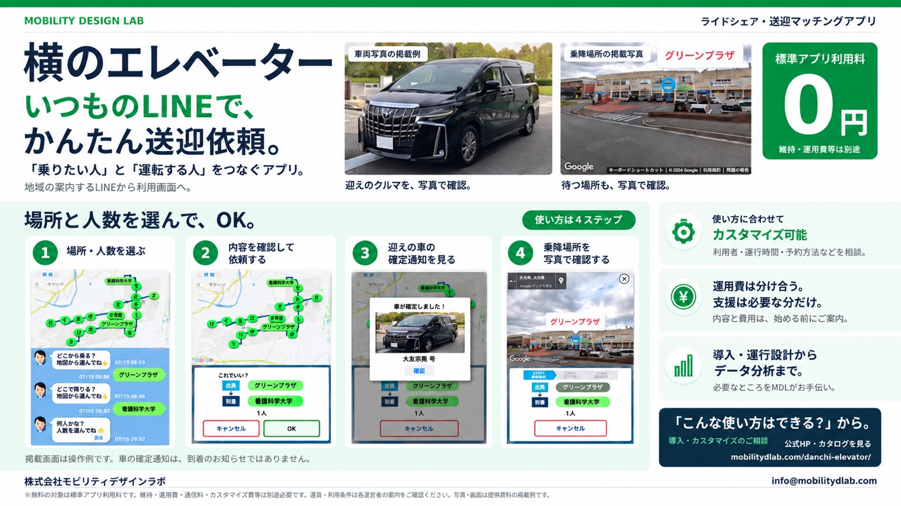

01
地域の計画を、実際に動く事業へ。
国交省「交通空白」解消
プロジェクト伴走支援
事業構想・実施計画、関係者との調整、人材育成、実証の設計・運営、結果整理まで。
- つくるもの
- 実施計画・役割分担・実証計画・成果整理
トヨタカローラ大分｜2025実績・2026進行中
支援内容と事例を見るWE MAKE IT HAPPEN.
MDLは、社会実装する会社です。
構想から現場へ。
現場から、続く仕組みへ。
国のプロジェクトへの伴走、アプリ開発、データ分析、
新規事業の立ち上げ・共創。
必要なところから、一緒に考え、つくり、動かします。
WHAT WE CAN DO FOR YOU
01国のプロジェクトを構想・開発・実証・改善を、ひとつながりに。
4 SERVICES / MDLに頼めること
構想だけでも、開発だけでも。
複数の支援を組み合わせても。
目的と今の状況に合わせて、進め方を設計します。
地域の計画を、実際に動く事業へ。
事業構想・実施計画、関係者との調整、人材育成、実証の設計・運営、結果整理まで。
トヨタカローラ大分｜2025実績・2026進行中
支援内容と事例を見る使う人と使う場面に、ぴったり合う仕組みを。
予約・配車・業務管理・情報検索など、ユースケースから操作と機能を設計。試作して、使いながら改善します。
開発例｜送迎アプリ「横のエレベーター」
開発内容と体験版を見る散らばるデータを、判断に使える形へ。
公開データや業務データを整理し、検索・比較・地図・ダッシュボードで使える仕組みにします。
公開デモ｜交通・アクセシビリティ／観光×交通
2つの公開デモを見るやりたいことを、仲間と動く計画に。
新しいサービスや事業のアイデアを整理し、顧客・事業仮説、仲間づくり、最初の検証を一緒に進めます。
公開リサーチ｜全国事例・イベント・地域構想
進め方と公開リサーチを見る01 / 国交省交通空白解消プロジェクトへの伴走支援
事業構想、関係者との調整、人材育成、実証設計、現場運営、結果整理。
トヨタカローラ大分との取組みを通じて、MDLが担う仕事を紹介します。
地域の人・企業・場・モビリティをつなぎ、共創と実証を進める取組み。MDLは、トヨタカローラ大分のパートナーとして企画・伴走しています。
AS OF 2026.09.21 ／ 個別施策には検討・調整中のものを含みます。
伴走支援の紹介ページを見る 2026 / OITA MIRAI MOBILITY CONSORTIUM ↗
2026 / OITA MIRAI MOBILITY CONSORTIUM ↗2025 / TOYOTA COROLLA OITA × MDL
実施主体はトヨタカローラ大分。MDLは、企画・運営支援、議論の進行、実証設計・仕組みづくりを担当。行政・住民・大学・学生と現場で取り組んだ活動を紹介します。


出典：大分モビリティ人材育成事業・共有写真
写真と活動の記録を見るLEARNING THROUGH IMPLEMENTATION
本気で地域課題に向き合い、実際に動かす。そのプロセスに行政・企業・大学・学生・住民が参加することで、人と地域に実装する力を残します。
2025年度 国土交通省
「交通空白」解消等リ・デザイン全面展開プロジェクト
モビリティ人材育成事業／大分
FROM DIALOGUE TO ACTION
行政・企業・大学・学生・住民が、対話、現地調査、運行準備、実証、振り返りへ。
MDL活動集計。実証参加を含む延べ参加人数で、同じ人の複数回参加を含みます。35活動は、複数日の活動を1項目にまとめたものを含みます。
活動と集計の根拠を見る活動を社会実装のプロセスでたどる
活動内容を工程別に整理。11工程は35件の個別開催日を表すものではなく、一部は並行して実施しています。35活動の一覧と出典 ↗
FIELD EVIDENCE / 富士見ヶ丘団地・大分市
トヨタカローラ大分の試乗車〈アルファード〉を活用。地域住民が利用する「横のエレベーター」の実証を行いました。
仕組み・導入事例を見る2025年度・富士見ヶ丘団地での実証。主催者集計：実運行10日、利用者ユニーク数72名、延べ乗車342人回。342は運行便数や実人数ではありません。現在の運行状況を示すものではありません。
出典：『富士見が丘団地実証実験結果報告（交通事業者向け）メリット感追加』2. 実施概要
数字の定義と根拠を見る ↗事業主体：トヨタカローラ大分株式会社 ／ 伴走支援：株式会社モビリティデザインラボ
02 / オーダーメイドのアプリ開発
「誰が、どこで、何をしたいか」から設計。
予約・配車・業務管理・情報検索など、ユースケースに合わせて必要な機能と操作を組み立てます。
要件整理、導線、UI・UX、データの持ち方。
Webアプリ、利用者画面、管理画面、連携機能。
現場で操作を確かめ、必要な機能を磨きます。
開発事例 / 横のエレベーター
地域の送迎を支えるアプリ。使う人の役割に応じた3つの画面を、公開体験版で確認できます。
標準アプリ利用料は0円。オーダーメイド開発・導入支援・維持運用は、内容に応じて個別にお見積もりします。
つくりたいアプリを相談する
紹介資料｜横のエレベーター · タップして拡大 ↗
小規模地域交通の、費用の壁を下げる。
小さな地域交通が、高額なシステムで続かなくならないように。乗りたい人、運転する人、運行を管理する人をつなぐ道具です。
標準アプリ利用料 0円。
クラウド・保守・導入支援・追加開発・
実際の運行にかかる費用は別途必要です。
所定の標準機能の利用料が対象です。
クラウド、データ保存・通信、システムの保守などに費用がかかります。
導入支援、追加開発、運行設計、データ分析などは内容を確認してご提案します。
カスタマイズや個別支援の購入は、標準アプリ利用の必須条件ではありません。車両・ドライバーの確保、保険、運行に必要な手続き・安全管理などは別途必要です。アプリ利用料無料は、運賃無料を意味しません。対応可否・内容・費用は事前に確認します。
導入・カスタマイズを相談するOPEN & CONNECTED
将来、行政・交通事業者・MaaS・AIとつながれる基盤へ。国の交通データ標準との連携と、AIエージェントとの連携を分け、実装・テストの状況を公開します。
03 / データ分析・データベース設計
集める、整理する、つなぐ、見せる。
出典と定義を保ちながら、地域や事業の課題を地図・検索・比較で調べられる仕組みにします。
収集・分類・名寄せ・項目設計・更新の仕組み。
需要、アクセス、利用、費用などの分析設計。
意思決定する人が、自分で調べられる画面に。

交通・アクセシビリティ / 公開デモ
交通空白を見つけて解消を考えるアクセシビリティマップ。人口・施設・時刻表などの公開データから、アクセスや送迎資源、改善案を調べます。
分析は収録データと設定条件の範囲で行う公開デモです。

観光 × 交通 / 公開データ
大分観光・周遊データマップ。大分県と重点６市町の観光統計を交通データと組み合わせ、行き方・現地の移動・周遊の条件を調べます。
交通は収録時刻表に基づく表示です。統計の対象年・調査方法・未取得項目はアプリ内で確認できます。
04 / 新規事業の立ち上げ・共創支援
新しいサービスや事業を始めたい。社外の仲間と挑戦したい。
誰にどんな価値を届けるかを整理し、事業仮説とチーム、最初の検証をつくるところから伴走します。
誰の、どんな課題に、どんな価値を届けるか。
関係者との対話、目的の共有、役割分担。
ヒアリング、試作、小さな実験から次の判断へ。
全国の事例・地域の接点・研究提案を、自分のプロジェクトを考える材料に。
EVIDENCE-BASED MOBILITY ATLAS
国交省交通空白解消プロジェクトを中心とした、全国の挑戦事例集。交通空白37紹介事例と人材育成61採択事業を、元資料へたどりながら探索できます。
国の事例データベースと、MDLが伴走した大分の実績を分けて掲載しています。
全国の挑戦事例集を開くOUR APPROACH / 4つの支援に共通する進め方
目的を共有し、現場を確かめ、小さくつくる。
試した結果から、次の設計へ。
必要な工程から、柔軟に組み合わせます。
NEWS
「横のエレベーター」のカタログを更新しました。実画面で使い方を紹介。ユーザー用・ドライバー用・管理者用と、要約版／詳細版のWeb・PDFを掲載しています。
「大分観光・周遊データマップ」の使い方カタログを公開しました。実画面16枚で、できること・使う人・操作手順を紹介します。
ABOUT MDL05
株式会社モビリティデザインラボ
Mobility Design Lab Inc.
LET’S MAKE IT HAPPEN.
その段階から、相談してください。
企画書がなくても構わない。
まだ予算化されていなくても構わない。
実現したいことを聞き、社会実装から逆算して一緒に考えます。
{kind=link}